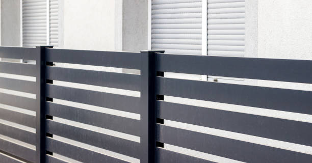

Hollywood Florida
info@superiorfenceandrail.pro
Hollywood Florida
info@superiorfenceandrail.pro

Secure your home or business in Hollywood Florida with top-quality fencing. We specialize in wood, vinyl, chain-link, and more. Trust our experienced team for reliable, long-lasting fence installations.
Click Here To Call Us (877) 848-1711If you’re looking for professional and reliable fence services in Hollywood Florida you’ve come to the right place! Our company specializes in delivering high-quality fencing solutions tailored to meet your needs. Whether you need a new fence installed, an old fence repaired, or a custom design to enhance your property’s curb appeal, we’ve got you covered.
We offer a wide variety of fencing materials to suit every style and budget, including durable vinyl fences, elegant wooden fences, secure chain-link fences, and long-lasting metal fences. Our team works with precision and care to ensure your fence not only looks great but also provides security, privacy, and functionality for years to come.
At our Hollywood Florida fence company, customer satisfaction is our top priority. From your first consultation to the final installation, we focus on clear communication, expert craftsmanship, and timely service. We also provide fence maintenance and staining services to keep your fence in top condition no matter the season.
Enhance your property and add value to your home or business with our fencing solutions in Hollywood Florida . Contact us today to schedule your free estimate and let us help you bring your vision to life. Your perfect fence is just a call away!
Residential & commercial Fences
Quality services at affordable prices
Immediate 24/ 7 emergency services


When it comes to securing your property, enhancing privacy, or adding curb appeal, our expert fence installation services in Hollywood Florida are your trusted choice. We specialize in providing top-notch fencing solutions tailored to your unique needs. Whether you’re looking for wood, vinyl, chain-link, or ornamental metal fences, our skilled professionals ensure precise installation with durable materials that withstand the test of time.
At , we prioritize customer satisfaction by offering a seamless experience from start to finish. Our team takes the time to understand your requirements, recommend the best options, and deliver results that exceed expectations. With years of experience and a proven track record, we are committed to craftsmanship and attention to detail, ensuring your fence not only serves its purpose but also enhances the aesthetic appeal of your property.
Why choose us? We use premium-quality materials designed to handle Hollywood Florida 's weather conditions, ensuring long-lasting performance. Our licensed and insured installers follow industry best practices, ensuring every project is completed safely and efficiently. Additionally, we offer competitive pricing and flexible scheduling to fit your budget and timeline.
Transform your residential or commercial property with the best fence installation services in Hollywood Florida . Contact us today for a free consultation, and let us help you secure your space with style and functionality.
Residential & commercial Fences
Quality services at affordable prices
Immediate 24/ 7 emergency services
For enhanced security that provides an additional layer of deterrence, electric fencing is an ideal solution for both residential and commercial properties. At Fences, we specialize in electric fencing installation delivering advanced security measures tailored to meet your specific needs.
Electric fences function as a powerful deterrent to trespassers by delivering a safe, non-lethal shock. This robust preventive measure is often complemented by traditional fencing solutions to create a comprehensive security perimeter. Our electric fencing options are designed with safety and efficiency in mind, utilizing technology that meets industry standards for security.
Our experienced technicians conduct thorough assessments of your property to determine the most effective locations for electric fencing installation. We adhere strictly to local codes and regulations, ensuring compliance and safe operation of your electric fencing system.
What sets Fences apart is our commitment to superior service and customer satisfaction. We aim to provide tailored security solutions that align with your specific requirements and deliver peace of mind. Our transparent pricing means there are no hidden costs, allowing for straightforward budgeting.
Invest in your property’s security with cutting-edge electric fencing installation from Fences. Let us help you protect what matters most in Hollywood Florida with reliable and effective fencing solutions.

For a unique and environmentally-conscious fencing solution, bamboo fencing offers exceptional beauty and sustainability. Bamboo is a renewable resource that grows quickly and is highly durable, making it an excellent choice for those looking to enhance their landscaping while promoting ecological health. At Fences, we specialize in bamboo fence installation providing beautiful and functional solutions that cater to your needs.
Bamboo fencing comes in various styles and heights, allowing you to create a stunning natural boundary that complements your outdoor space. Its unique appearance adds texture and visual interest, making it popular for gardens, patios, and other outdoor settings.
Our bamboo fences are expertly crafted using high-quality materials and installation techniques, ensuring durability and stability. We understand the climate conditions and use methods that enhance bamboo's longevity and resistance to the elements.
What distinguishes Fences is our commitment to eco-friendly practices and exceptional customer service. We take the time to understand your desires and vision, offering tailored solutions that reflect your unique style. Our transparent pricing structure ensures you're informed throughout the process, allowing for straightforward budgeting.
Enhance your outdoor space with the charm of bamboo fencing—an eco-conscious choice that doesn’t compromise on style. Contact Fences today to schedule a consultation and explore the possibilities of bamboo fencing installation .

Wrought iron fencing is a classic choice, offering both elegance and security. Over time, however, wrought iron can suffer from rust, damage, and wear, making restoration essential. At Fences, we specialize in wrought iron fence restoration and installation bringing beauty and strength back to your fencing.
Our wrought iron fencing options come in various designs, providing the right blend of security and aesthetic appeal. When restoring wrought iron fences, we carefully assess the damage, performing tasks such as rust removal, repainting, and structural repairs to ensure your fence looks its best and remains structurally sound.
Expert installation is critical for wrought iron fences, and our seasoned professionals utilize best practices to guarantee a beautiful and durable result. With a keen eye for detail and a commitment to quality, we ensure that your new or restored wrought iron fence enhances your property.
What differentiates Fences is our exceptional customer service and craftsmanship. We value open communication, allowing us to understand your specific needs and deliver a final product that aligns with your vision. Our transparent pricing means you’ll never have any surprises when it comes to cost.
Trust Fences for all your wrought iron fence restoration and installation needs . Whether you’re looking to restore a loved heirloom or install a new fence that combines beauty and security, we are here to help.

Every property has unique needs and aesthetics that require personalized solutions. Our custom fence design and build services cater to properties looking for specific styles and functionalities. Whether you want a decorative fence that enhances curb appeal or a robust privacy solution, our experienced team works closely with you to create a design that meets your vision. We draw on a diverse range of materials and styles, ensuring that your custom fence is as functional as it is beautiful. Choose us for our personalized approach and commitment to quality in custom fencing solutions.

Keeping horses and livestock secure is crucial for their safety and your peace of mind. Our horse and livestock fencing services offer solutions tailored to rural properties that prioritize both security and aesthetic appeal. With materials ranging from wood to high-tensile wire, we create fencing designed to contain livestock effectively without compromising their welfare. Our experienced team understands the nuances of livestock behavior and will ensure fencing meets your specific needs. Choose us for expert advice and high-quality installation, ensuring your animals remain safe and secure.
Enhance your garden’s appeal and protect valued plants with our garden and landscape fencing services in Hollywood Florida . Our decorative solutions not only provide a visual barrier but also keep animals and pests at bay. Available in a variety of styles, including picket, lattice, and more, our fencing options cater to different aesthetics and functional needs. Our experienced team guides you through the selection and installation process, ensuring your garden is beautifully framed and secure. Choose us for our commitment to quality craftsmanship and durability in landscape fencing solutions.

In our busy world, finding peace and quiet in your home or business might seem impossible. Noise reduction fencing provides an effective solution to block unwanted sounds and create a more serene environment. At Fences, we specialize in noise reduction fencing installation offering tailored solutions designed to enhance your comfort and tranquility.
Our noise reduction fences are constructed using specially designed materials designed to absorb and deflect sound waves, effectively minimizing external noise. This type of fencing is ideal for homes located near busy roads, commercial properties, or any other noisy environments.
We understand that soundproofing requires careful planning and installation to be effective, and our experienced team is adept at assessing your specific needs. We collaborate with you to design a fencing solution that fits your environment and provides optimal sound reduction.
What distinguishes Fences is our expertise in noise reduction techniques and commitment to customer satisfaction. We believe in delivering solutions that truly enhance your quality of life, ensuring your investment provides the intended peace and quiet.
Invest in your comfort with professional noise reduction fencing from Fences. Let us help you create a tranquil outdoor space where you can relax and enjoy your surroundings undisturbed.

For an elegant yet durable fencing option, ornamental steel fencing is the perfect solution for enhancing your property’s perimeter. At Fences, we specialize in ornamental steel fencing installation that combines beauty with strength.
Our ornamental steel fences come in a variety of designs, allowing you to create a fence that matches your property style while offering the security you need. The durability of steel ensures that your investment will withstand the test of time, requiring minimal maintenance over the years.
Our expert installation team is dedicated to delivering quality craftsmanship that exceeds industry standards. We work with each client to ensure that their unique design vision and practical needs are met.
Choosing Fences for ornamental steel fencing in Hollywood Florida ensures that you receive a top-notch product and service. Join the many satisfied customers who have enhanced their properties with our beautiful ornamental steel solutions backed by a commitment to quality.

For maximum security and durability, stone and concrete fencing present the perfect solution for property owners . These robust materials are well-suited for both residential and commercial properties, providing a solid barrier against noise and unwanted intrusion. Our stone and concrete fencing services involve expert installation and design that considers aesthetics and functionality. With a commitment to using high-quality materials, we ensure your fencing will withstand the elements and provide long-lasting security. Trust us to deliver impressive results that enhance the integrity and safety of your property.
Years Experience
Expert Technicians
Satisfied Clients
Compleate Projects
When it comes to securing your property, enhancing privacy, or adding curb appeal, Superior Fence stands out as the trusted choice across all cities in Hollywood Florida . With years of experience in the fencing industry, we are committed to providing durable, aesthetically pleasing, and reliable fences tailored to your specific needs.
Our team at Superior Fence takes pride in offering a wide range of fence styles, including wood, vinyl, chain link, and ornamental metal, ensuring that you find the perfect fit for your property. We use only the highest-quality materials to guarantee the longevity and resilience of every installation. Whether you're looking for increased security, privacy, or simply to define your property boundaries, our custom solutions deliver lasting results.
What sets us apart from other fencing companies in Hollywood Florida is our dedication to exceptional customer service. From the initial consultation to the final installation, our team is with you every step of the way, providing expert advice and support. We ensure that every fence is installed with precision and care, meeting both your functional and aesthetic needs.
At Superior Fence, we value your time and investment. Our competitive pricing, timely installations, and focus on craftsmanship make us the go-to fencing contractor in Hollywood Florida . Choose us for your fencing project and experience the Superior difference – where quality meets reliability.
In today's world, ensuring your personal space is free from the prying eyes of neighbors and passersby is essential. A privacy fence installation is more than just a boundary; it's an investment in your peace of mind. At Fences, we specialize in designing and installing high-quality privacy fences that perfectly suit your property and lifestyle. Our team understands that privacy is paramount, and we work diligently to create secure, enclosed outdoor spaces where you can relax, entertain, and enjoy your surroundings.
We offer a variety of materials for your privacy fence, including wood, vinyl, and composite options, each with unique benefits. Our experts will help you choose the right style that complements your home while ensuring maximum privacy. We also focus on durable construction, using only the best materials that withstand the test of time, weather, and wear.
What sets us apart from other fencing companies is our commitment to customer satisfaction. We take the time to understand your needs, collaborate on a design that works for you, and provide professional installation that adheres to local regulations. Our skilled team ensures that every fence we install not only looks great but stands strong against the elements.
Choosing us means choosing quality. We pride ourselves on our attention to detail and the beauty of our craftsmanship. Our fences not only enhance your property's aesthetic appeal but also add value to your home. With years of experience in privacy fence installation we have built a reputation for reliability, efficiency, and excellence.
Whether you're looking to block noise from a busy street or simply want to create a secluded outdoor retreat, our privacy fences are an ideal solution. Let's transform your outdoor space with a stunning privacy fence that offers protection, beauty, and peace of mind. Trust Fences for all your privacy fence installation needs—because your privacy matters.
Wooden fences have an exquisite charm that can enhance the curb appeal of any residential or commercial property. However, like any outdoor structure, wooden fences can succumb to the elements, leading to deterioration over time. At Fences, we provide expert wooden fence repair and installation services tailored to meet the diverse needs of our Hollywood Florida clientele.
Our team of seasoned professionals understands the nuances of wooden fence installation. We work efficiently to ensure your new fence not only looks stunning but also stands the test of time. We offer a wide variety of styles and finishes, allowing you to customize your fence to fit your specific tastes and surrounding landscape.
In the event of damage, our wooden fence repair services will restore your fence's integrity and beauty. Whether it’s fixing damaged boards, replacing posts, or addressing rot and insect infestations, we apply effective techniques to bring your fence back to life. We use high-quality materials and provide solutions that not only resolve immediate issues but also prevent future problems.
Why choose Fences for your wooden fence needs Our commitment to excellence and customer satisfaction is unmatched. We recognize that each project is unique, and we approach every job with personalized attention. Our transparent pricing model ensures no hidden fees, giving you peace of mind.
Don't let a damaged fence detract from your property. Our dedicated team will help you choose the right wood type and design that aligns with your budget and vision. With our experience and dedication to quality workmanship, we guarantee that your wooden fence will be a stunning addition to your property. Choose us for professional, reliable wooden fence repair and installation services in Hollywood Florida —your satisfaction is our priority.
If you're looking for a low-maintenance, durable, and aesthetically pleasing fencing option, vinyl fencing is a perfect choice. At Fences, we specialize in vinyl fencing installation that provides a clean, modern look while standing up to the rigors of the weather.
Vinyl fences are resistant to warping, cracking, and fading, making them an ideal long-term investment for your property. Our team is well-versed in the latest vinyl fencing technologies and designs to deliver a product that fits your specific style preferences and functional requirements.
In addition to installation, we also provide vinyl fence repair and maintenance services to keep your investment looking as good as new. By choosing our comprehensive services, you can enjoy the peace of mind that comes with knowing your fence is in expert hands.
Our commitment to quality, professionalism, and superior customer service makes us the best choice for vinyl fencing . We take pride in turning your fencing visions into reality while delivering a hassle-free experience from start to finish.
Chain-link fencing is an effective solution for both residential and commercial properties, offering visibility and security. Our chain-link fence installation services provide strong and durable fencing options that can adapt to various heights and configurations to meet your specific needs. Ideal for securing yards, playgrounds, or industrial facilities, chain-link fences are a budget-friendly way to protect your property while maintaining visibility. They require minimal maintenance and can be coated with vinyl for added aesthetics and rust resistance. With our expertise and customer-first approach, we ensure you're fully satisfied with your chain-link fence solution.
If you’re looking for a fencing option that combines elegance with durability, decorative aluminum fencing is an excellent choice. Our aluminum fencing services in Hollywood Florida offer a stylish solution that enhances your property without compromising security. Lightweight yet robust, aluminum fences are resistant to corrosion and rust, making them ideal for the varying climates of Hollywood Florida . With a wide array of designs and colors to choose from, we can customize your aluminum fence to align with your desired aesthetic preferences. Choose us for a professional installation experience characterized by quality, elegance, and unparalleled customer service.
The timeless charm of a picket fence brings warmth and personality to any home. Our picket fence installation services provide residents with a stylish way to define their properties while enhancing curb appeal. Available in various heights and styles, our picket fences can be made from wood or vinyl, allowing you to choose according to your taste and maintenance preferences. Each installation is carried out with precision and care, ensuring a sturdy and beautiful finish. Trust us to deliver a quality picket fence that reinforces your home's unique character while providing a welcoming atmosphere for your family and guests.
If you're looking to add rustic charm to your property while maintaining a clear boundary, our split rail fencing services are the perfect solution. At Fences, we specialize in the installation of split rail fences that provide both functionality and aesthetic value.
Split rail fencing is ideal for defining property lines and enclosures while allowing for unobstructed views of your landscape. Our fences are constructed from high-quality materials, ensuring longevity and resilience against the elements while complementing the natural beauty of your property.
Our experienced team will work closely with you to determine the best design and layout for your split rail fence, ensuring it meets both your practical needs and stylistic preferences. Choosing us means investing in quality workmanship and personalized service that makes your fencing project a smooth process from start to finish.
Whether you want to enhance your property’s appeal, contain livestock, or simply mark boundaries, we are here to help. Trust Fences to deliver exceptional split rail fencing solutions that your neighbors will envy.
Protecting your fence against the elements is crucial for maintaining its beauty and functionality over time. At Fences, we offer professional fence staining and maintenance services designed to extend the life of your fencing investment.
Our expert team understands the importance of proper maintenance and can recommend the best products suitable for your specific fence type. Regular staining not only enhances the fence’s appearance but also helps to protect it from damage caused by UV rays, moisture, and pests.
We pride ourselves on our attention to detail and quality service. Our maintenance plans are customizable to fit your needs, ensuring that your fence remains in pristine condition year-round. Choosing us means you’ll receive reliable support and expert advice to keep your fences looking their best.
Join our customers who trust Fences for all their fence maintenance needs. We ensure your property’s boundaries remain attractive and functional, providing you peace of mind and a welcoming environment.
When it comes to protecting your loved ones, especially children, a pool safety fence is essential. At Fences, we specialize in pool safety fence installation services designed to enhance the safety of your swimming pool area, allowing you to enjoy your pool without worry.
Our pool fences are built to meet the highest safety standards, providing a secure barrier that prevents unauthorized access to your pool. We offer a range of materials and styles, from aluminum to mesh, ensuring you can find the perfect fit for your landscape and aesthetic.
Our installation process is quick and efficient, allowing you to enjoy your pool safely in no time. Our team understands local regulations and safety requirements, ensuring compliance with all laws while maximizing safety and ease of use.
Choose Fences for your pool safety fencing needs and let us help you create a secure oasis for your family . Our commitment to quality and safety guarantees your peace of mind while enjoying the summer days by the pool.
Keeping your pets safe and secure is a top priority for any responsible pet owner. At Fences, we provide professional pet containment fencing solutions that ensure your furry friends can play freely without the worry of wandering off or becoming exposed to external dangers.
Our pet containment systems include a variety of fence types suitable for different pet sizes and behaviors, from traditional wooden and vinyl fences to specialized invisible fencing systems. We work closely with you to design a containment solution that fits your yard and meets your pets' specific needs.
Choosing our services means ensuring the safety of your pets while maintaining the aesthetics of your property. Our expert installation and ongoing support ensure your pet containment fence is functional and reliable.
Join countless satisfied customers in Hollywood Florida who have trusted Fences to create a safe environment for their beloved animals. Our dedication to quality, design, and customer care makes us the go-to choice for pet containment solutions.
In today’s ever-evolving world, protecting your business is of utmost importance. At Fences, we specialize in security fencing solutions that provide an effective barrier against theft and vandalism. Security fencing is an investment that not only safeguards your property but also enhances your business’s reputation as a secure place.
We offer a diverse range of security fencing options, including high-security chain-link, barbed wire, and ornamental steel fences. Our experienced team will assess your property’s unique vulnerabilities and recommend the best solutions tailored to your needs. With a focus on quality materials and expert installation, you can trust us to deliver robust security fencing solutions designed to withstand attempted breaches. Choose Fences for your business’s security fencing needs and experience unparalleled protection and service.
Industrial properties require heavy-duty fencing that can withstand the demands of the environment. Our industrial chain-link fence installation services specialize in creating secure boundaries for warehouses, factories, and manufacturing facilities. We understand the unique needs of industrial sites, and our fences are designed to provide maximum security while allowing for visibility and airflow. Available in various heights and configurations, our chain-link fences can be customized to meet your specific requirements. Choose our experienced team for reliable service, quality materials, and installations that exceed industry standards.
Keeping construction sites secure and safe is essential for both workers and the public. Our temporary fencing services in Hollywood Florida offer effective and easily deployable solutions designed for construction and event management. Our fences are sturdy yet lightweight, making them easy to install and remove as needed. They provide clear boundaries, deter unauthorized access, and enhance safety on-site. With customizable options, we can cater to different project scales and durations, ensuring you get the perfect fit for your needs. Trust our team for efficient service and quality materials that ensure your construction site is well-protected.
For businesses looking to balance aesthetic appeal with effective security, aluminum fencing is an excellent choice. At Fences, we provide commercial aluminum fencing solutions that offer durability, low maintenance, and an elegant appearance.
There are numerous advantages to selecting aluminum fencing for your commercial property, such as resistance to rust and corrosion, which means it will look great for years to come without intensive upkeep. Our aluminum fences come in various designs tailored to fit your branding and needs, providing an attractive perimeter that meets security demands.
Our team is committed to delivering high-quality fencing installation, using only the finest materials and methods to ensure your fence stands the test of time. We work collaboratively with you to understand your property requirements, ensuring optimal functionality and safety.
Choosing Fences means trusting a partner dedicated to quality service and customer satisfaction. With many successful projects completed we have earned a reputation as the go-to provider for commercial aluminum fencing solutions.
Securing your property is more than just erecting barriers; it’s about controlling who enters. Our access control and gate systems in Hollywood Florida are designed to meet a variety of security needs, incorporating advanced technology such as keypads, remote controls, and biometric scans. We provide comprehensive installation services that ensure seamless integration with your existing fencing. Our solutions enhance your security while allowing you to maintain easy access for authorized personnel. Trust our experienced team to design and install a system that fits your security needs and budget, making us the go-to choice for access control solutions .
For properties requiring an additional layer of security, barbed wire fencing is an effective deterrent against intrusion. Commonly used in industrial, agricultural, and commercial applications, this type of fencing combines security with affordability. At Fences, we specialize in barbed wire fence installation providing tailored solutions that cater to your specific security needs.
Barbed wire fencing is designed to provide a strong protective barrier, discouraging unauthorized entry. We use high-quality materials and expert installation techniques to ensure your barbed wire fence not only looks professional but is also built to withstand the elements.
Our team understands the importance of compliance with local regulations when it comes to barbed wire installation. We ensure that your fence adheres to all requirements while providing the security you need. Additionally, we can work with you to determine the appropriate height and configuration to suit your specific environment.
What sets Fences apart is our commitment to quality and exceptional customer service. We prioritize your satisfaction, taking the time to understand your security needs and providing solutions that best fit your property. Our transparent pricing model ensures no hidden fees, giving you confidence in your investment.
Choosing our barbed wire fence installation means you can rest easy, knowing that you have taken a proactive approach to securing your property. With years of experience, Fences is the trusted choice for barbed wire fencing solutions . Contact us today to learn more and schedule your installation.
Privacy fencing is essential for commercial properties seeking to protect their assets while maintaining an inviting environment. At Fences, we offer specialized commercial privacy fencing solutions that combine security with style.
Our privacy fences are available in various materials, including wood, vinyl, and composite materials, catering to the specific requirements of your property. They provide an effective barrier against noise, prying eyes, and traffic, allowing you to create a serene environment for employees and clients.
We understand the importance of timely installation and minimal disruption to your business operations. Our skilled team works with you to ensure a seamless experience from design to implementation, providing quality workmanship that meets your timeline and requirements.
By choosing Fences, you benefit from our dedication to precision and customer satisfaction. Let us help you create a safe and attractive space with our commercial privacy fencing. Your business deserves the best in security and aesthetics.
Safety should never be compromised, especially for properties that require strict security measures. Our anti-climb fence installation services are designed to deter intruders and enhance your property’s safety. We utilize specialized fencing designs that discourage climbing, coupled with robust installation techniques to ensure long-lasting performance. Often used in industrial and high-security environments, our anti-climb fencing solutions provide peace of mind. With years of industry experience, we’re committed to delivering exceptional service that meets your security needs without compromising on quality. Choose us for professional installations you can trust.
Protecting your industrial facility requires a reliable perimeter fencing solution tailored to your unique needs. At Fences, we specialize in perimeter fencing designed specifically for industrial applications, combining security and accessibility.
Our perimeter fences are made from high-grade materials built to withstand the stresses of industrial environments. We provide customized solutions tailored to your facility’s layout, security needs, and regulatory compliance requirements.
Installation is performed by our expert team, ensuring that your fencing is secure while allowing easy access for authorized personnel. We understand the importance of efficiency in industrial settings, which is why we strive to complete installations promptly without sacrificing quality.
Trust Fences to provide the best perimeter fencing for your industrial facility . Join our roster of satisfied clients who have secured their operations with our expert-designed solutions. We take pride in providing high-quality, reliable, and effective fencing systems that protect your assets.
Securing your warehouse or storage unit is essential in protecting your business assets. At Fences, we specialize in providing fence solutions specifically tailored for warehouses and storage facilities that offer enhanced security and peace of mind.
Our fencing options include high-grade materials that are designed for both strength and durability, ensuring your property remains protected against theft or vandalism. We work closely with you to design fencing solutions that address your unique needs regarding access control and visual aesthetics.
The installation of your warehouse fencing is handled by our skilled professionals with minimal disruption to your operations. Our experience in the industry enables us to provide you with reliable, cost-effective solutions that meet all local regulations.
Choose Fences for warehouse and storage unit fencing in Hollywood Florida . Join a multitude of satisfied customers who have enhanced their properties' security by working with us. Our commitment to quality means your assets are well protected.
Enthusiasts of sustainability will find our eco-friendly fencing solutions appealing! We offer various materials that prioritize the environment without sacrificing quality or aesthetics. From reclaimed wood to bamboo and recycled vinyl, our eco-friendly options provide durability and a stylish look for your home or business. Our team is knowledgeable about sustainable practices and can help you choose the best solution that aligns with your values. With a commitment to green solutions, choose us for fencing that contributes to a healthier planet while enhancing your property.
Choosing the right fencing materials for Hollywood Florida 's unique climate is essential to ensure durability, longevity, and style. The weather conditions in Hollywood Florida including intense sunlight, high humidity, and occasional storms, can take a toll on standard fencing options. That’s why we offer premium-quality fencing materials designed to withstand the toughest conditions while enhancing the curb appeal of your property.
Our range of fencing solutions includes weather-resistant wood, vinyl, aluminum, and composite materials that are specially treated to resist warping, fading, and corrosion. For those seeking privacy and security, our durable wood and vinyl fences are excellent choices, while our aluminum and composite options provide a low-maintenance, modern aesthetic. Each material is tailored to handle the fluctuating temperatures and humidity levels in Hollywood Florida ensuring your fence remains sturdy and attractive for years to come.
In addition to offering exceptional materials, we prioritize sustainability by sourcing eco-friendly products whenever possible. Our team of fencing experts is dedicated to helping you choose the best option for your needs, whether it’s for a residential, commercial, or industrial property.
Invest in high-quality fencing materials for Hollywood Florida and experience the perfect blend of functionality, beauty, and durability. Contact us today to discuss your fencing needs and discover how our solutions can protect and elevate your property.
Hollywood is a city in southern Broward County, Florida. It is a key suburb of the Miami metropolitan area, which was home to 6.14 million people in 2020. As of the 2020 census, the population was 153,067, making it the third-largest city in Broward County, the fifth-largest city in the Miami metro area, and the 12th-largest city in Florida. The average temperature is between 69 and 83 °F (21 and 28 °C).
Simply contact Superior Fence to schedule a consultation and begin your fencing project .
We offer a range of fence heights to meet your privacy and security needs in Hollywood Florida typically from 4 to 8 feet.
Yes, we use eco-friendly materials and processes to minimize the environmental impact of our fences .
Yes, we provide warranties on materials and workmanship for all fences installed .
Yes, Superior Fence offers fence removal services as part of your installation project .
Yes, Superior Fence provides free, no-obligation quotes for all fence installation projects in Hollywood Florida .
Yes, we design our fences with safety in mind to protect children in your Hollywood Florida property.
Superior Fence installs a wide variety of fences in Hollywood Florida including wood, vinyl, chain-link, aluminum, and privacy fences tailored to your specific needs.
Privacy fences offer seclusion, enhanced security, and noise reduction, making them an excellent choice for homes .
Yes, our fences are designed to keep your pets safe and secure in your Hollywood Florida yard.
Popular styles include picket fences, privacy fences, and decorative aluminum fences.
Absolutely! Contact Superior Fence to schedule a convenient consultation for your fencing project .
Superior Fence is known for exceptional craftsmanship, high-quality materials, and outstanding customer service in Hollywood Florida .
Yes, Superior Fence is experienced in meeting HOA guidelines and can ensure your fence complies with regulations .
Yes, Superior Fence specializes in installing pool fences that meet safety standards .
Absolutely! Our fences are made with high-quality materials designed to withstand the climate and weather conditions .
Our experts will help you choose the ideal fence based on your needs, preferences, and property style .
Fence installation costs vary based on material, size, and design. Contact Superior Fence for a competitive quote tailored to your Hollywood Florida project.
Maintenance varies by material. We provide guidance on cleaning, staining, and repairs to keep your fence in top shape .
Depending on local regulations, you may need a permit to install a fence . We can help you navigate the permitting process.
The lifespan depends on the material used. Wood fences typically last 10-15 years, while vinyl and aluminum fences can last 20+ years .
Yes, we offer flexible financing options to make your fence installation affordable .
Yes, we offer staining and painting services to enhance the appearance and durability of your fence .
Yes, we have the expertise to install fences on uneven or sloped terrains in Hollywood Florida .
Yes, Superior Fence provides professional fence repair services to restore the functionality and appearance of your fence.
Yes, Superior Fence offers fence installation services for both residential and commercial properties .
The timeline for fence installation depends on the type and size of the project, but most installations are completed within 1-3 days.
We accept a variety of payment methods, including credit cards, checks, and financing options for projects in Hollywood Florida .
Absolutely! We provide a variety of colors and finishes to ensure your fence complements your Hollywood Florida property.
Yes, Superior Fence offers custom fence designs in Hollywood Florida to match your property’s style and requirements.
We had a fantastic experience with Superior Fence in Hollywood Florida . The team was courteous and efficient, and the fence they installed looks great. We’re thrilled with the service and highly recommend Superior Fence to anyone in the area.
Profession
Superior Fence did a wonderful job installing a fence at my home in Hollywood Florida . Their team was professional, hardworking, and the results were exactly what I envisioned. I couldn’t be happier with my fence!
Profession
Superior Fence did a fantastic job on our new fence in Hollywood Florida . The crew was fast, courteous, and the fence is sturdy and attractive. We are so pleased with the results. Definitely a 5-star company in Hollywood Florida !
Profession
Hollywood FL Fences Pros
(877) 848-1711
info@superiorfenceandrail.pro
09.00 AM - 09.00 PM
09.00 AM - 12.00 PM